Steigern
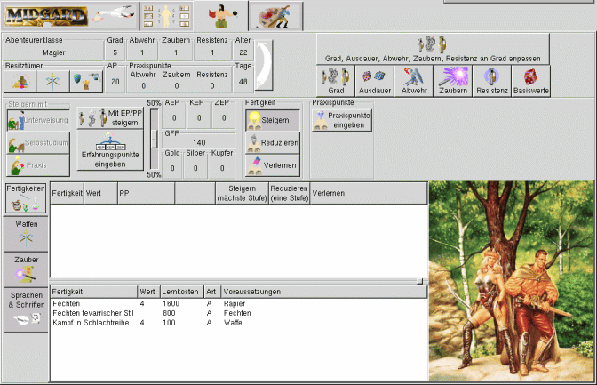
Auf dieser Seite findet die eigentliche Verwaltung der Abenteurer statt.
Dazu ist diese Seite nach verschiedenen Funktionen unterteilt.:
Info und Besitz:
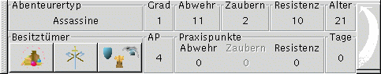
And dieser Stelle werden Informationenen über verschiedene Werte angezeigt. Daneben gibt es noch die
Möglichkeit, den Geld, Waffen und Rüstungsbesitz zu verwalten.
| 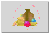 |
Geld:
Über diesen Button kann Geld in Form von Gold-, Silber- und Kupferstücken eingegeben werden. |
 |
| 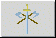 |
Waffen:
Hinter diesem Fenster verbirgt sich das Auswahlfenster für die nutzbaren (erlernten) Waffen. |
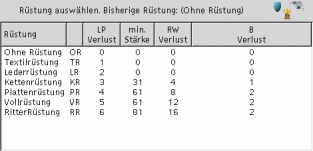 |
| 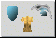 |
Rüstung:
Hinter diesem Fenster verbirgt sich das Auswahlfenster für die Rüstungn. |
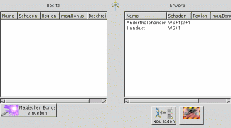 |
| 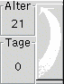 |
Pfeil: Tage → Alter
Dieser Button dient dazu, die mit dem Erlernen von Fertigkeiten verbrachten Tage
zum Alter des Abenteurers zu addieren. |
|
Gradanstieg:
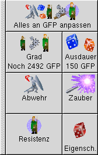
Diese Buttons dienen dazu, (bei erreichen der entsprechenden Anzahl von GFP) den GRad eines Abenteurers zu erhöhen.
Hierbei werden unter den entsprechenden Buttons die noch fehlende Anzahl der GFP angezeigt, bzw. die FP-Kosten.
| 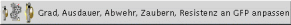 |
Dieser Button führt alle möglichen Steigerungen automatisch durch. |
| 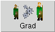 |
Grad:
Erhöhen des Grades bei ausreichenden GFP |
| 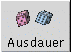 |
Ausdauer:
Button zum Steigern der Ausdauer |
| 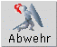 |
Abwehr
Erhöhen des Abwehrwertes |
| 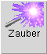 |
Zaubern
Steigern der Erfolgsertes für Zaubern. |
| 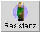 |
Resistenz:
Erhöhung der Resistenzen |
| 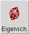 |
Eigenschaften:
Auswürfeln, ob beim Gradanstieg eine Eigenschaft erhöht wird. |
Steigern von Fertigkeiten
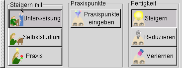
Form des Steigerns:
| 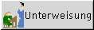 |
Steigern mit Unterweisung:
Die Fertigkeiten werden mit hilfe eines Lehrmeisters erhöht oder gelernt.
Zum lernen muß Geld aufgewand werden. |
|
| 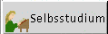 |
Steigern im Selbststudium:
Fertigkeiten werden im Selbstudium gesteigert.
Es werden nur EP aufdewendet. |
|
| 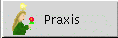 |
Steigern durch Praxis:
Fertigkeiten werden durch Anwendung gelernt
Das Steigern findet
mit Praxispunkten statt. |
|
Erfahrungs- und Praxispunktepunkte:
| 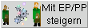 |
Mit EP/PP steigern
Hier wird festgelegt, ob beim Steigern Erfahrungs-/Praxispunkte und Geld aufgewendet werden sollen.
Wird diese Option deaktiviert, kann beliebig gesteigert werden. Diese Option richtet sich in erster Linie an Spielleiter. |
|
| 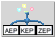 |
Erfahrungspunkte eingeben:
Es öffnet sich ein Fenster, in welchem Erfahrungspunkte (AEP, KEP und ZEP) eingegeben werden können. |
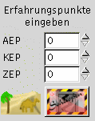 |
| 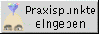 |
Praxispunkte eingeben:
Mittels diese Buttons öffnet sich ein Eingabefeld für die Praxispunkte.
Dabei wird mittels der Radiobuttons festgelegt, ob die Praxipunkte einer Fertigkeit, Zaubern, der Abwehr oder einer Resistenz zugeordnet werden. |
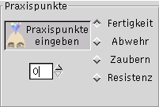 |
| 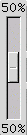 |
Verhältnis von EP und Gold festlegen:
ÜBer diesen Schieberegler läßt sich das Verhältnis von Praxispunkten und Geld beim Steigern von Fertigkeiten festlegen.
Die Extremwerte sind 2/3 EP und 1/3 Gold (Regler oben) und 1/3 EP und 2/3 Gold (Regler unten) |
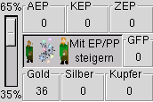 |
Optionen für das Steigern und Erlernen von Zaubern:
| 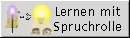 |
Lernen mit Spruchrolle:
Mit "Lernen von Spruchrolle" ist es möglich, bestimmte Zauber mittels Spruchrollen
zu erlernen. Neben diesem Button befinden sich zwei weitere Buttons: "würfeln" und "automatisch".
Wird "würfeln" gewählt, so "würfelt"
MAGUS, ob der Zauber erfolgreich erlernt wird. Ist "automatisch" aktiviert, so wird der Zauber durch einfache Auswahl zu den gelernten
Zaubern hinzugefügt. |
 |
| 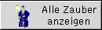 |
Alle Zauber Anzeigen:
Es werden alle Zauber angezeigt. |
|
| 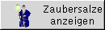 |
Zaubersalze anzeigen:
Zaubersalze werden in der Spruchliste aufgeführt. |
|
Steigern, reduzieren und verlernen von Fertigkeiten:
Buttons:
 |
Steigern und erlernen von Fertigkeiten:
Ist dieser Button aktiviert, so werden die Erfolgswerte bereits erlernter Fertigkeiten (im im oberen
Fenster) gesteigert, indem sie mit der Maus angewählt werden. Durch die Auswahl einer Fertigkeit aus derm unteren Fenster wird diese erlernt. |
 |
Reduzieren:
Ist dieser Button aktiv, so wird der Erfolgswert der angewählten Fertigkeit jeweils um 1 reduziert, bis zum Minimalwert reduziert. |
 |
Verlernen:
Nach dem Aktivieren dieses Buttons wird eine Fertigkeit, die mit ihrem Minimalwert beherrscht wird verlernt. |
Auswahlfenster
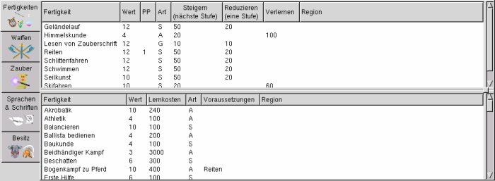
Das Steigern von Fertigkeiten erfolgt mittels zweier Fenster. Das obere Fenster beinhaltet die Liste der bereits gelernten
Fertigkeiten, das untere Fenster zeigt die Liste der erlernbaren Fertigkeiten an.
Erlernen von Fertigkeiten:
Zum Erlernen einer neuen Fertigkeit muss der Button "Steigern" aktiviert sein. Durch einmaliges (!) anklicken mit Maus, wird die
neue Fertigkeit aus der Liste im unteren Fenster ausgewählt und gelernt.
Steigern von Fertigkeiten:
Zum Steigern von Fertigkeiten muss der Button "Steigern" aktiviert sein. Durch einmaliges (!) anklicken einer Fertigkeit im
oberen Fenster wird der Erfolgswert der Fertigkeit um 1 erhöht.
Reduzieren von Fertigkeiten:
Soll der Erfolgswert einer Fertigkeit reduziert werden, so muss der Button "Reduzieren" aktiviert sein. Das einmalige (!) Anklicken der
Fertigkeit bewirkt einer Reduzierung des Erfolgswertes um 1. Der Wert einer Fertigkeit läßt sich nur bis zu ihrem Mindestwert reduzieren.
Verlernen von Fertigkeiten:
Eine Fertigkeit, deren Erfolgswert nur ihrem Minimalwert entspricht, kann verlernt werden. Hierzu muss der Button "Verlernen" aktiviert
sein. Das Verlernen erfolgt duch einmaliges Anklicken der Fertigkeit.